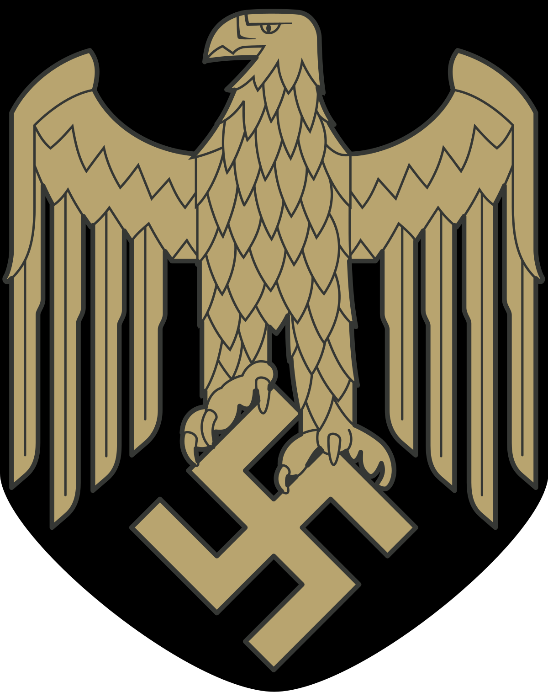

La Kriegsmarine fue la Marina de Guerra de la Alemania nazi durante la
Segunda Guerra Mundial. Fue creada en 1935 después de que Adolf Hitler
violara las restricciones impuestas por el Tratado de Versalles, que
prohibía a Alemania tener una marina de guerra.
La Kriegsmarine se desarrolló rápidamente bajo el liderazgo del almirante
Erich Raeder. Durante la guerra, la marina alemana se enfocó en la guerra
submarina, utilizando submarinos U-Boot para atacar los convoyes aliados
en el Atlántico. Los U-Boots alemanes fueron altamente efectivos y
causaron graves pérdidas a los Aliados, especialmente en las primeras
etapas de la guerra.
La Kriegsmarine también contaba con una flota de buques de guerra, incluyendo
acorazados como el Bismarck y el Tirpitz, cruceros de batalla como el Scharnhorst
y el Gneisenau, y una serie de destructores y torpederos. Sin embargo,
la flota de superficie alemana se vio limitada por la superioridad naval de
las potencias aliadas, especialmente de la Royal Navy británica.
A medida que la guerra avanzaba, la Kriegsmarine enfrentó dificultades debido
a los crecientes ataques aéreos y navales de los Aliados, así como a la
escasez de recursos y tripulaciones calificadas. Aunque realizó algunas
incursiones exitosas, como el hundimiento del crucero británico HMS Hood,
la Kriegsmarine no logró obtener una ventaja naval decisiva.
Después de la derrota de Alemania en 1945, la Kriegsmarine fue desmantelada
y sus restos se repartieron entre las potencias vencedoras. Muchos de los
barcos de guerra alemanes fueron hundidos, desguazados o utilizados con fines
de prueba y experimentación. La Kriegsmarine dejó un legado controvertido
debido a los crímenes de guerra cometidos por algunos de sus miembros,
particularmente en la guerra submarina.
U-Boot Longevidad:
Durante la Segunda Guerra Mundial,
los submarinos U-Boot de la Kriegsmarine establecieron
récords de longevidad en misiones de combate. Varios
U-Boots pasaron más de 200 días en el mar, con algunos
incluso superando los 300 días.
Superficie Reversible:
El acorazado alemán Bismarck
contaba con una característica inusual: podía invertir
su dirección en alta mar. Esto se lograba al girar las
hélices y timones en direcciones opuestas, lo que permitía
un giro de 180 grados sin necesidad de dar la vuelta completa.
Cambio de Nombres:
Durante la guerra, la Kriegsmarine
cambió los nombres de algunos de sus barcos para confundir
a los Aliados. Por ejemplo, el crucero de batalla Lützow fue
renombrado como Deutschland, mientras que el acorazado Graf
Spee fue conocido como Admiral Scheer. Estos cambios de nombres
complicaron la identificación de los barcos alemanes por parte de
los Aliados.
Operación Safari:
Durante la ocupación de Noruega, la Kriegsmarine
llevó a cabo una audaz misión conocida como "Operación Safari".
Consistió en el traslado de cinco destructores alemanes a través
de aguas hostiles y fuertemente vigiladas por la Royal Navy. Los
destructores lograron evadir a los británicos y llegar a puertos
alemanes sin sufrir grandes pérdidas.
Servicio en el Pacífico:
Aunque la Kriegsmarine fue principalmente
una fuerza naval europea, tuvo presencia en el Pacífico durante la
guerra. Algunos de sus submarinos U-Boot operaron en el Océano Índico
y el Mar de China Meridional, llevando a cabo patrullas de combate
contra los barcos aliados en la región.
¿Quieres revivir la gloria de la Kriegsmarine?
World of Warships es un videojuego de combate naval en línea desarrollado por Wargaming.
El juego se centra en batallas navales multijugador, donde los jugadores asumen el control
de diversos buques de guerra de diferentes naciones y periodos históricos. Los jugadores
pueden elegir entre una amplia variedad de barcos, incluyendo acorazados, cruceros,
destructores y portaaviones, cada uno con sus propias características y roles en el campo
de batalla.
En World of Warships, los jugadores participan en emocionantes batallas navales en mapas
detallados y realistas. El objetivo principal es trabajar en equipo con otros jugadores para
cumplir objetivos estratégicos, como capturar bases o destruir la flota enemiga. El juego
ofrece una experiencia de combate naval auténtica, con gráficos impresionantes, efectos de
sonido realistas y mecánicas de juego bien diseñadas.
A medida que los jugadores progresan en el juego, pueden desbloquear y mejorar diferentes
barcos, desbloquear nuevas naciones y acceder a tecnologías más avanzadas. Además, World of
Warships ofrece eventos especiales, torneos y actualizaciones regulares que mantienen el juego
fresco y emocionante.
 Kriegsmarine
Kriegsmarine